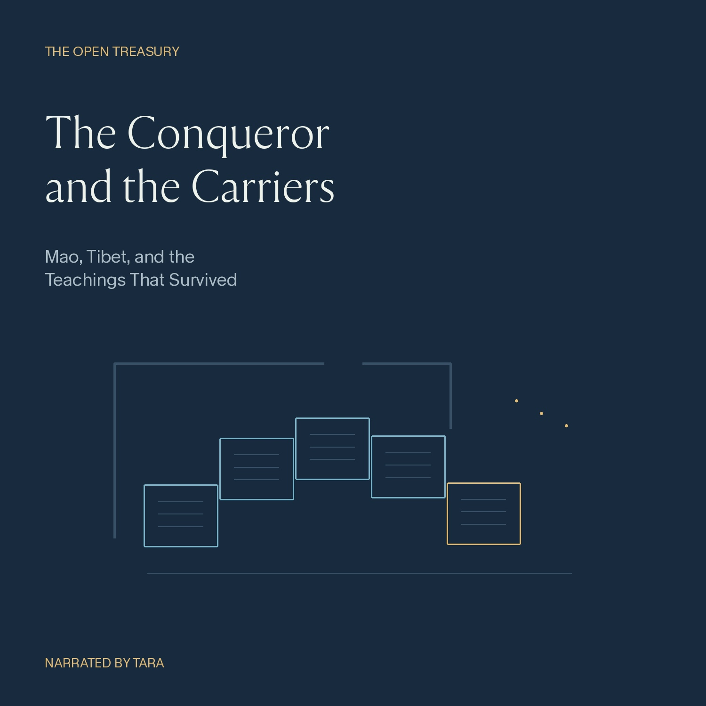

The Conqueror and the Carriers
Mao, Tibet, and the Teachings That Survived
Mao's political and military effectiveness, mass suffering, religious destruction in Tibetan regions, and the people who preserved and carried teachings through exile and rebuilding. An original historical essay, with separate evidence trails for the iron-bird and wildfire sayings attributed to Padmasambhava.
Moving visual edition
Watch or download the 720p symbolic animation
M4A audio download
Chapters
- 00:00 - The question inside the question
- 02:30 - A strong enemy is not the same as an unbeatable enemy
- 06:27 - Winning was a collective achievement
- 09:53 - The listening machine and the sorting machine
- 13:12 - The catastrophe is not a number at the bottom of the page
- 17:24 - When restoring order kills
- 19:54 - Tibet is not one date
- 23:27 - What it means to destroy a teaching
- 27:23 - The carriers
- 31:33 - The iron bird and the dated page
- 34:47 - The wildfire is a different question
- 37:36 - What remains of the word genius
Read alongside the course
Detailed sources and reading limits
Complete spoken script
Rights, narration and review
The two sayings attributed to Padmasambhava have different evidence trails. An actual 1976 English newspaper letter verifies circulation of the iron-bird composite by that date, not an eighth-century origin or its earliest witness. The wildfire wording has a verified modern teaching context; its exact older Tibetan source remains unverified here. Source notes identify extracts, reviews and institutional accounts rather than claiming every underlying book was read in full.
Narrated by Tara using AI-generated speech. Every complete take was compared against the frozen script using speech recognition and editorial review. Whole-piece retakes replaced piece 6 and piece 24; the second retake of piece 24 restored a missing chapter title and sentence opening. The selected sequence, all 28 joins, decoded-source reconstruction and complete media decoding were checked. This was automated and editorial review, not full human-ear listening or native-language pronunciation certification. Approximate names, weak consonants and minor function-word or inflection variations may remain. The complete intended spoken script is supplied.
The unaltered selected performance and earlier takes are privately preserved losslessly. The listening edition uses only +2 dB fixed gain and an oversampled transparent true-peak limiter, with 5 ms latency compensation. No EQ, pitch change, time stretching or other compression was used. MP3: -17.8 LUFS, -1.6 dBTP. M4A and video: -17.4 LUFS, -1.2 dBTP. The 720p symbolic moving edition uses the identical decoded soundtrack to the M4A. Its picture ends 0.76 seconds after the sound because chapter frames are rounded up. All twelve encoded chapter designs and motion pairs were visually inspected. The illustrations are original symbols, not historical images or route maps.
The commentary, narration and illustrations are original; any CC0 dedication applies only to that original material. Cited scholarship, translations and underlying sources retain their rights. No source PDF, photograph, recording, long translation reading or restricted practice instruction is included.